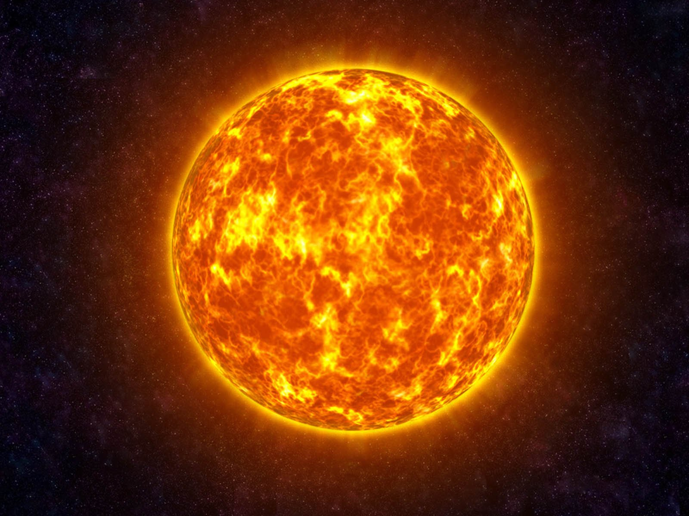

Солнце - это звезда в центре Солнечной системы. Это почти идеальный шар горячей плазмы, нагретый до накала реакциями ядерного синтеза в своем ядре, излучающий энергию главным образом в виде света, ультрафиолетового и инфракрасного излучения. Это самый важный источник энергии для жизни на Земле. Солнце — ближайшая к Земле звезда, единственная в Солнечной системе. Расстояние от Земли до Солнца — около 150 млн км. Диаметр Солнца в 109 раз больше диаметра нашей планеты. Температура на поверхности Солнца достигает 6000°С. В центре температура Солнца доходит до миллионов градусов.
